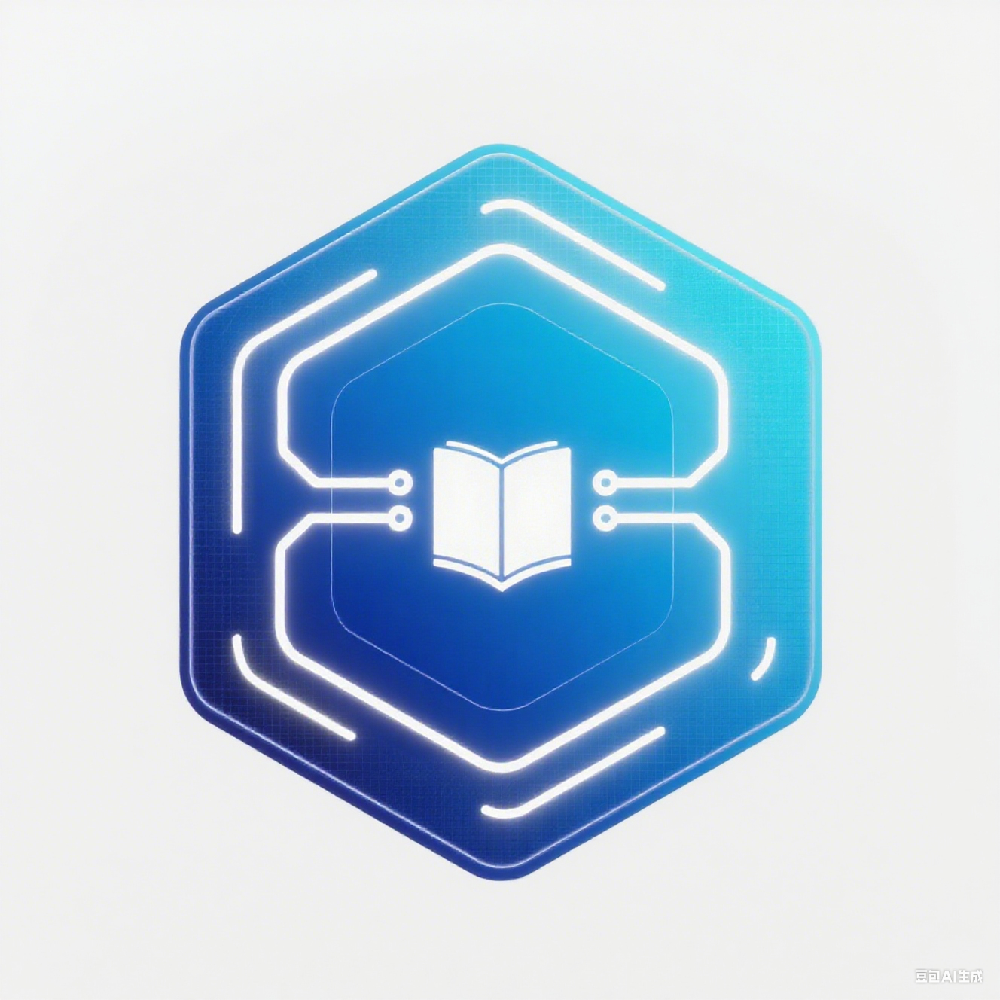

知识库管理系统
喵喵喵喵
喵喵喵喵
喵喵喵喵
喵喵喵喵
喵喵喵喵
喵喵喵喵
喵喵喵喵
喵喵喵喵
喵喵喵喵
知识库管理系统
Knowledge Base Management System
探索所有使用功能

喵喵喵喵
喵喵喵喵
喵喵喵喵
喵喵喵喵
知识库管理系统
Knowledge Base Management System
探索所有使用功能
退出专注模式
偏好设置
查看各设置项的详细说明
×
显示设置
字体大小
16px
调整文档内容的字体显示大小
行间距
1.5
调整文本行与行之间的距离
段间距
15px
调整段落与段落之间的距离
页边距
20px
调整文档内容区的四周边距
字体选择
默认
默认字体
微软雅黑
宋体
黑体
等宽字体
Times New Roman
选择文档内容的显示字体
主题模式
切换亮色/暗色主题（重启后生效）
编辑器设置
自动保存
编辑时自动保存文档内容（每30秒）
自动换行
编辑器中超出宽度时自动换行
显示行号
在编辑器左侧显示行号
代码高亮
对Markdown中的代码块进行语法高亮
自动缩进
4
设置编辑器中Tab键的缩进字符数
导航与搜索
侧边栏默认展开
加载文档时自动展开侧边栏标题列表
搜索高亮
搜索结果在文档中高亮显示
搜索大小写敏感
搜索时区分字母大小写
平滑滚动
点击导航时平滑滚动到目标位置
高级设置
粒子效果
启用/禁用页面背景粒子动画效果
粒子数量
50
调整背景粒子动画的粒子数量
缓存设置
启用本地缓存（保存设置和历史记录）
清除缓存
立即清除
清除所有本地缓存数据（包括设置和历史）
调试模式
启用调试模式（显示控制台日志，仅开发者使用）
导入设置
×
粘贴设置JSON代码（从其他设备导出）：
导出设置
×
复制以下JSON代码（可导入到其他设备）：
你好！我是智能助手，有什么可以帮助你的吗？
刚刚
如何使用这个系统？
刚刚
你可以通过左侧导航浏览文档，使用顶部搜索框查找内容，或者在设置中调整显示偏好。有具体问题可以随时问我哦！
刚刚
关联知识库
加载文件
文本问答
×
选择问题...
如何保存当前文档？
如何导出设置？
如何使用专注模式？
如何导入文档？
提交
下载
修改
保存
加载文件
隐藏侧边栏
设置
专注模式